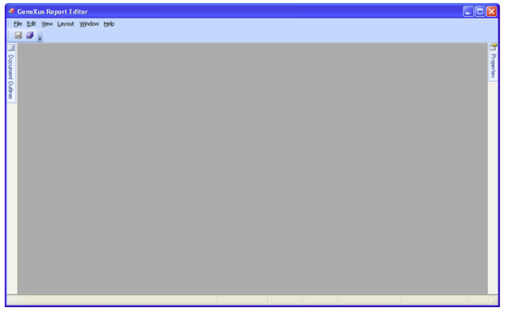

Upon installing a new application or as time elapses, it is common for customers to need the customization of reports. For example, they may need to change the image with the company´s logo, or they may need to modify some elements to be printed or not (like discounts per line in an invoice), as well as comply with different legal regulations specific to each country, etc. To provide a solution to this, GeneXus offers a simple way intended for end-users to make them possible to modify certain aspects relative to the reports outputs, like fonts, the position of controls, colors, and others by themselves. As we know, from the viewpoint of development with GeneXus, reports are defined by creating Procedure objects with Layout and a few simple settings are needed to obtain the result in PDF format. When they are generated, in addition to the lines of code in the corresponding language, an XML file is also generated for each procedure with layout, containing the information relative to the presentation (controls, position, fonts, and others). Each XML file is metadata taken in runtime to design each procedure output (the output isn't hard-coded inside the generated code). So, even though the XML files are editable, GeneXus offers a friendlier alternative for end-users, to modify the outputs. GeneXus Report EditorGeneXus offers an editor called GeneXus Report Editor (GxReportEditor.exe), which is available at the installation root of GeneXus.  It allows end-users upon opening a .rpt file associated with a report (Procedure object with Layout), to update its printblocks. How and where the .rpt files are generated and located?The .rpt files are not generated by default. The developer has to set the Customizable Layout property in the Knowledge Base at Generator level if he/she decides to generate the .rpt file for each procedure with layout, or the same property at object level if he/she decides to generate it for specific procedures. The .rpt files are stored under the Knowledge Base path, specifically under the LayoutMetadata directory which is located under the web directory under the generator directory: GeneXus Report Editor characteristicsOnce a .rpt file is opened using the GeneXus Report Editor, the view is the same as the one GeneXus offers in the Procedure Layout. Controls may be deleted from the print blocks: By accessing the controls’ properties, it is possible to modify properties such as Fonts, Colors, and others: It is also possible to change the position of controls within the print block. However, controls cannot be moved from one print block to another, and neither it is possible to include controls that were not originally included in a print block when the procedure was designed in GeneXus. AvailabilityThis feature is available for Java generator since GeneXus X Evolution 2 and for .NET generator since GeneXus X Evolution 2 upgrade 5. |
| Backlinks | ||
| Customizable Layout property | ||
| Layout Metadata Directory property | Manually configuring Tomcat | Toc:Reporting in GeneXus |